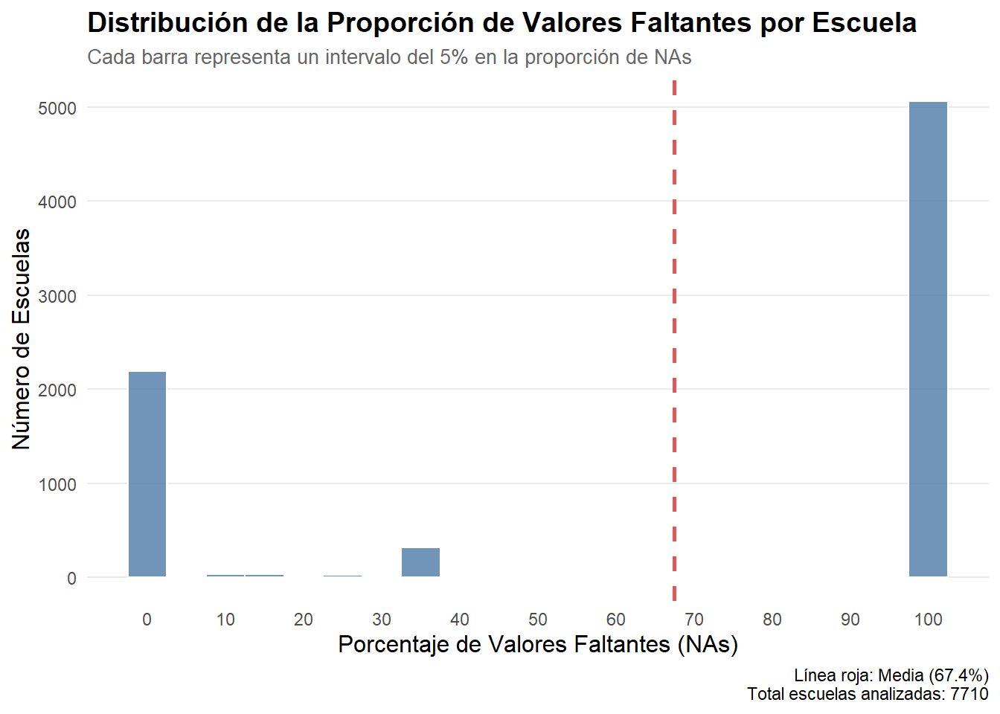
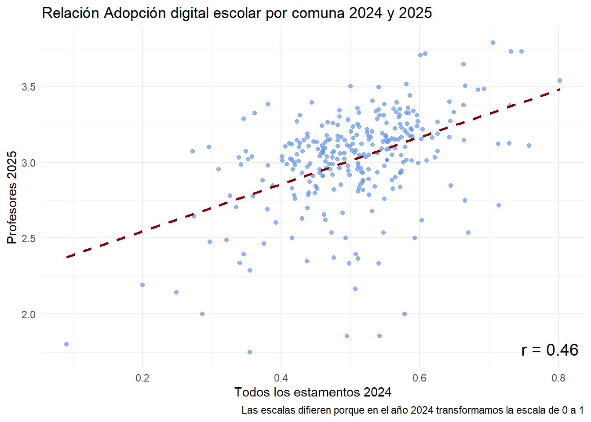

# Calcular proporción de NA por comunana_por_comuna <- docente |>group_by(m_id, m_name) |>summarise(total_docentes =n(),n_na =sum(is.na(p_idc)),prop_na = n_na / total_docentes,.groups ="drop" ) |>arrange(desc(prop_na))# Filtrar comunas con más de 75% de NAetiquetar <- na_por_comuna# Graficarggplot(na_por_comuna, aes(x =reorder(m_name, prop_na), y = prop_na)) +geom_col(color ="#F08080") +coord_flip() +scale_y_continuous(labels =percent_format(accuracy =1)) +labs(title ="Proporción de docentes sin índice por comuna",x =NULL,y ="% con NA en índice (p_idc)" ) +theme_minimal() +theme(axis.text.y =element_blank())
2.3 ¿Cuáles son las comunas >.90 NA?
Code
set.seed(123) # para reproducibilidad# Filtrar comunas con > 75% NAna_por_comuna <- docente |>group_by(m_id, m_name) |>summarise(total_docentes =n(),n_na =sum(is.na(p_idc)),prop_na = n_na / total_docentes,.groups ="drop" ) |>arrange(desc(prop_na)) |>filter(prop_na >0.75)# Seleccionar aproximadamente 1 de cada 3 comunas para etiquetar (aleatorio)etiquetar <- na_por_comuna %>%slice_sample(prop =1/3)# Gráfico con etiquetas solo en los puntos seleccionadosggplot(na_por_comuna, aes(x =reorder(m_name, prop_na), y = prop_na)) +geom_point(color ="#F08080") +geom_text_repel(data = etiquetar,aes(label =paste0(m_name, "\nN=", total_docentes)),size =2.5,nudge_y =0.02,segment.size =0.3 ) +coord_flip() +scale_y_continuous(labels =percent_format(accuracy =1)) +labs(title ="Comunas con > 75% de casos perdidos",x =NULL,y ="% con NA en índice (p_idc)" ) +theme_minimal() +theme(axis.text.y =element_blank())
2.4 Atrición de profesores por escuelas
Code
# 1. Creación variable cantidad de escuelas por comuna (pre limpiar NAs) -------docente <- docente %>%group_by(m_id) %>%mutate(n_escuelas_orig_comuna =n_distinct(c_id)) %>%ungroup()# 2. Creación de variable tipo de escuela# 2. Creación de variable número y porcentaje de NAs por escuela ---------------escuelas_stats_na <- docente %>%# Agrupamos por el identificador único de la escuelagroup_by(c_id) %>%# Calculamos n y % de NAssummarise(c_name =first(c_name), n_escuela =n(),n_NAs_escuela =sum(is.na(p_idc)),.groups ='drop' ) %>%mutate(prop_NAs_escuela = (n_NAs_escuela / n_escuela) *100 ) %>%select(c_id, c_name, n_escuela, n_NAs_escuela, prop_NAs_escuela)escuelas_problematicas <- escuelas_stats_na %>%filter(prop_NAs_escuela >90)
Code
# Histograma con estilo profesionalggplot(escuelas_stats_na, aes(x = prop_NAs_escuela)) +geom_histogram(binwidth =5, fill ="#4E79A7", color ="white", alpha =0.8 ) +geom_vline(xintercept =mean(escuelas_stats_na$prop_NAs_escuela, na.rm =TRUE), color ="#E15759", linetype ="dashed", size =1 ) +labs(title ="Distribución de la Proporción de Valores Faltantes por Escuela",subtitle ="Cada barra representa un intervalo del 5% en la proporción de NAs",x ="Porcentaje de Valores Faltantes (NAs)",y ="Número de Escuelas",caption =paste0("Línea roja: Media (", round(mean(escuelas_stats_na$prop_NAs_escuela, na.rm =TRUE), 1), "%)\n","Total escuelas analizadas: ", nrow(escuelas_stats_na)) ) +scale_x_continuous(breaks =seq(0, 100, by =10)) +theme_minimal() +theme(plot.title =element_text(face ="bold", size =14),plot.subtitle =element_text(size =10, color ="gray40"),axis.title =element_text(size =12),panel.grid.minor =element_blank(),panel.grid.major.x =element_blank() )

Code
data.frame(Item =c("Total de escuelas", "Escuelas con 100% NA", "Atrición nivel escuela"),Valor =c(nrow(escuelas_stats_na)|>round(0),nrow(escuelas_problematicas)|>round(0), (nrow(escuelas_problematicas)/nrow(escuelas_stats_na))|>round(2)) )|>kable()
Item
Valor
Total de escuelas
7710.00
Escuelas con 100% NA
5057.00
Atrición nivel escuela
0.66
2.5 Atrición de comunas por escuelas
Code
docentes_filtrado <- docente %>%filter(!c_id %in% escuelas_problematicas$c_id)# 5. Creación de variable cantidad y porcentaje de escuelas por comuna (luego de limpiar NAs)docentes_filtrado <- docentes_filtrado %>%group_by(m_id) %>%mutate(n_escuelas_post_filtro_comuna =n_distinct(c_id)) %>%ungroup()comunas_stats <- docentes_filtrado %>%# Agrupamos por el identificador único de la comunagroup_by(m_id) %>%# Rescatamos los valores y el nombre usando first()summarise(m_name =first(m_name), # Rescatamos el nombre de la comunan_escuelas_original =first(n_escuelas_orig_comuna),n_escuelas_mantenidas =first(n_escuelas_post_filtro_comuna),.groups ='drop' ) %>%# Calculamos el porcentaje de escuelas que se mantuvieronmutate(pct_escuelas_mantenidas = (n_escuelas_mantenidas / n_escuelas_original) *100 ) %>%# Reordenamos las columnas para mayor claridad (opcional)select(m_id, m_name, n_escuelas_original, n_escuelas_mantenidas, pct_escuelas_mantenidas)ggplot(comunas_stats, aes(x = pct_escuelas_mantenidas)) +geom_histogram(binwidth =5, fill ="#4E79A7", color ="white", alpha =0.8 ) +geom_vline(xintercept =mean(comunas_stats$pct_escuelas_mantenidas, na.rm =TRUE), color ="#E15759", linetype ="dashed", size =1 ) +labs(title ="Distribución de la Proporción de Escuelas Faltantes por Comuna",subtitle ="Cada barra representa un intervalo del 5% en la proporción de NAs",x ="Porcentaje de Escuelas Faltantes (NAs)",y ="Número de Comunas",caption =paste0("Línea roja: Media (", round(mean(comunas_stats$pct_escuelas_mantenidas, na.rm =TRUE), 1), "%)\n","Total comunas analizadas: ", nrow(comunas_stats)) ) +scale_x_continuous(breaks =seq(0, 100, by =10)) +theme_minimal() +theme(plot.title =element_text(face ="bold", size =14),plot.subtitle =element_text(size =10, color ="gray40"),axis.title =element_text(size =12),panel.grid.minor =element_blank(),panel.grid.major.x =element_blank() )
2.6 Comunas con Atrición >90 de escuelas
Code
library(forcats)# Cambiar variable en filter (pct_escuelas_mantenidas o n_escuelas_mantenidas) para ver los datoscomunas_plot <- comunas_stats %>%filter(pct_escuelas_mantenidas <10)# Generamos el gráficoggplot(comunas_plot, aes(x = n_escuelas_mantenidas, y =fct_reorder(m_name, n_escuelas_mantenidas))) +geom_bar(stat ="identity", fill ="steelblue") +geom_text(aes(label =paste0(round(pct_escuelas_mantenidas, 1), "%")), hjust =-0.2, size =3 ) +labs(title ="Comunas con menos de 10 escuelas después del filtro de NAs",subtitle ="La etiqueta muestra el % de escuelas originales que se mantuvieron",x ="N° de escuelas mantenidas en la muestra",y ="Comuna" ) +theme_minimal() +scale_x_continuous(expand =expansion(mult =c(0, 0.15)))
3 Comparación de muestras IDC 2024
3.1 Resumen de Correspondencia entre comunas
Code
mother_data_2024 <-readRDS("~/GitHub/milenio_nudos/idc/data/proc_data/private_data/2024_mother_data.rds")mother_data_2025 <-readRDS("~/GitHub/milenio_nudos/idc/data/proc_data/private_data/2025_mother_data.rds")indice_2024 <-read_excel("~/GitHub/milenio_nudos/idc/data/proc_data/public_data/2024_idc_v1.xlsx")indice_2025 <-read_excel("~/GitHub/milenio_nudos/idc/data/proc_data/public_data/2025_idc_v1.xlsx")# 2. Comparación de muestra de comunas -----------------------------------------# Seleccionar ID y variable de índice de cada añobase_2024 <- indice_2024 %>%select(id_comuna, c_indice, nombre_comuna) %>%mutate(m_id =as.character(id_comuna)) %>%select(m_id, c_indice, nombre_comuna) %>%rename(indice_2024 = c_indice, m_name = nombre_comuna)base_2025 <- indice_2025 %>%mutate(m_id =as.character(m_id)) %>%select(m_id, m_idc, m_name) %>%rename(indice_2025 = m_idc)# Unir ambas bases por m_idcomparacion <-full_join(base_2024, base_2025, by ="m_id", suffix =c("_2024", "_2025"))# Clasificar según presencia de NAresultado <- comparacion %>%mutate(estado =case_when(is.na(indice_2024) &is.na(indice_2025) ~"NA en ambos años",is.na(indice_2024) &!is.na(indice_2025) ~"NA solo en 2024 (comuna ganada)",!is.na(indice_2024) &is.na(indice_2025) ~"NA solo en 2025 (comuna perdida)",TRUE~"Presente en ambos" ) )# Tabla resumentabla_resumen <- resultado%>% dplyr::count(estado)tabla_resumen|>kable()
3.3 Correlación de los índices educacionales en ambos años
Code
# Filtrar solo comunas presentes en ambos añosdatos_completos <- resultado %>%filter(!is.na(indice_2024) &!is.na(indice_2025))# Calcular correlaciónr_valor <-cor(datos_completos$indice_2024, datos_completos$indice_2025, use ="complete.obs") %>%round(2)# Graficarggplot(datos_completos, aes(x = indice_2024, y = indice_2025)) +geom_point(color ="#6495ED", alpha =0.7) +geom_smooth(method ="lm", se =FALSE, color ="darkred", linetype ="dashed") +annotate("text", x =Inf, y =-Inf, hjust =1.1, vjust =-1,label =paste0("r = ", r_valor), size =5, color ="black") +labs(x ="Todos los estamentos 2024",y ="Profesores 2025",title ="Relación Adopción digital escolar por comuna 2024 y 2025",caption ="Las escalas difieren porque en el año 2024 transformamos la escala de 0 a 1" ) +theme_minimal()

4 Comportamiento de los valores del Índice
4.1 Distribución de puntajes
Code
# Añadir variable "rm"idc_rm <- idc %>%mutate(rm =ifelse(r_id ==13, "Metropolitana", "Región"))# Usar la misma base para top_bottomtop_bottom <- idc_rm %>%arrange(desc(m_idc)) %>%slice_head(n =10) %>%bind_rows( idc_rm %>%arrange(m_idc) %>%slice_head(n =10) )# Plotggplot(idc_rm, aes(x = m_idc, y =reorder(m_name, m_idc), color = rm)) +geom_point(size =2, alpha =0.8) +geom_text_repel(data = top_bottom,aes(label = m_name, color = rm), # <- importante: asegurar que el color esté también en esta capasize =2.5,max.overlaps =50,direction ="y" ) +labs(title ="Distribución del índice por comuna",x ="Índice (m_idc)",y =NULL,color ="Zona" ) +theme_minimal() +theme(axis.text.y =element_blank())
5 Correlación con SIMCE
Code
# SIMCEidc_simce <-merge(select(idc,m_id, idc_2025=m_idc), simce_comuna_2m, by ="m_id", all.x =TRUE)idc_simce <-merge(idc_simce, simce_comuna_6b, by ="m_id", all.x =TRUE)idc_simce <-merge(idc_simce, simce_comuna_4b, by ="m_id", all.x =TRUE)# Selecciona sólo columnas numéricas y sin NAs para correlaciónidc_simce_num <- idc_simce %>%select(-m_id) %>%na.omit() # elimina filas con NA para que rcorr funcione# Alternativamente, si quieres mantener filas con NA, puedes imputar o eliminar columnas con NA# Calcula la matriz de correlación y p-valuesrcorr_res <-rcorr(as.matrix(idc_simce_num))# Haz el corrplotcorrplot(rcorr_res$r, method ='color', type ='lower', tl.col ="black", bg ="white",addCoef.col ='black', number.cex =0.8, diag =FALSE)
6 Correlación con otros índices
Code
idc_others <-merge(select(idc, m_id, idc_2025=m_idc), idc_2024, by ="m_id", all.x =TRUE)idc_others <-merge(idc_others, idh_comunal, by ="m_id", all.x =TRUE)idc_others <-merge(idc_others, pobreza_multi_comunal, by ="m_id", all.x =TRUE)idc_others <-merge(idc_others, conectividad_comunal, by ="m_id", all.x =TRUE)idc_others <- idc_others|>select(-m_id)corrplot(rcorr(as.matrix(idc_others))$r, p.mat =rcorr(as.matrix(idc_others))$P, method ='color', type ='lower', insig='blank',tl.col ="black",bg="white",na.label="-",addCoef.col ='black', number.cex =0.8, diag=FALSE,sig.level =0.05)